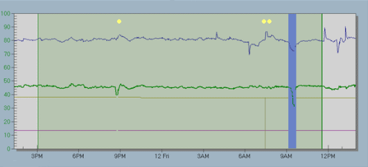

Data exclusion and interpolation
The Neural, Predict and PredictPro check historical data from the DeltaV Continuous Historian for questionable values before using the data in a model or sensitivity analysis. Questionable data includes missing, bad, uncertain and limited data. The absence of good samples for a duration of TSS/120 seconds is considered one questionable scan, where TSS is the Time to Steady State and 120 is the prediction horizon. The following describes how the software manages such data:
Missing and bad data - The software informs you if there are missing or bad data values in the selected data set. The software excludes missing and bad data values automatically if they occur for longer than two scans. For missing or bad values below the two scan threshold, the software interpolates rather than excludes the data. You determine if you want to view the data first or proceed. If you view the data, the software displays the excluded missing and bad values on a blue background. The software displays yellow markers above the interpolated values. If the markers are not visible, click to view the markers.
Uncertain and limited data - The software informs you if there are uncertain or limited data values for one scan or more. You determine if you want to use the uncertain and limited data or view it first. Uncertain or limited data is not interpolated. If you view the data, the software displays the values on a blue background.
